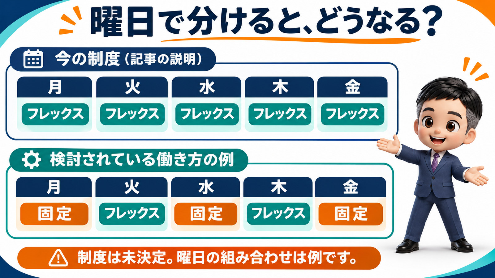

フレックスタイム制に、固定勤務の日を混ぜられるようになりそうです。何日を固定にするかは、会社ごとに決めることになると思います。
今日は、フレックスタイム制のニュースの話をします。
厚生労働省の審議会で、フレックスタイム制に固定勤務を混ぜることを認める方向で、話がまとまりつつあります。
まだ決定ではありません。
ただ、今後法律で認められる可能性は高いのではないかと思っています。
今日は、今のフレックスタイム制の問題点と、新しい制度で出てきそうな課題、そしてその着地点の予想までお話しします。
先に結論を言っておきます。
固定勤務を何日にするかは、会社ごとに決めることになると思います。
残業代は、固定勤務とフレックスで分けて計算する形になりそうです。
ニュースの中身は、こういうことです。
2026年11月17日に、労働政策審議会の労働条件分科会が開かれました。
そこで、フレックスタイム制と通常の固定勤務の混在を認める方向で、労使がおおむね一致したと報じられています。
出社する日は決められた時刻で働き、テレワークの日は始業と終業を自分で決める、といった働き方が例に挙がっています。
一方で、混在をどの程度まで認めるかは、労使の隔たりが大きく、決着していないそうです。
割増賃金の計算なども含めて、具体的な制度はこれから検討されます。
フレックスタイム制、通常の固定勤務との混在容認へ 厚労省の審議会(朝日新聞)
フレックスタイム制を入れている会社は、1割もありません。
フレックスタイム制という名前は、聞いたことがある方が多いと思います。
「働きやすそうな制度だな」
こういういい印象を持っている方が多いのではないでしょうか。
実際に、従業員にとってはとても働きやすい制度だと思います。
では、この制度を入れている会社がどれだけあるかというと、令和7年の調査では8.3%です。
9割以上の会社が、入れていないということです。
広がらない理由は、会社が始業と終業を決められないからです。
フレックスタイム制を入れると、毎日の仕事の始まりと終わりの時間を、従業員に委ねることになります。
会社は、そこに指揮命令ができません。
基本的には、いつ来てもいいし、いつ帰ってもいい、というのがフレックスタイム制です。
従業員にとってはいい制度に見えます。
でも、会社からすると話は別です。
「従業員みんなにバラバラに来られたら困る」
ここが、一番のボトルネックになっているのではないかと思います。
もちろん、コアタイムを設けることはできます。
この時間だけは必ずいてね、という時間帯です。
コアタイムの長さは、会社が決められます。
ただ、長くしすぎるとフレックスの意味が薄れるので、それほど長く設ける会社は多くありません。
数時間のコアタイムを設けても、かなり流動的な制度になります。
それで、会社が導入に踏み切れないのだと思います。
今は、一度フレックスにした人は、全部の勤務日がフレックスになります。
今の制度でも、人ごとに分けることはできます。
一定の役職以上の人だけ。
ある部署の人だけ。
こういう決め方は、会社でできます。
でも、一度この人、この部署にフレックスタイム制を入れると、その人はずっとフレックスです。
全部の勤務日について、始業と終業を自分で決めることになります。
今回の話は、ここにメスを入れようということです。
新しい制度では、曜日ごとに固定とフレックスを分けられそうです。
例えば、月曜日から金曜日までが出勤日だとします。
今は、月曜から金曜まで、すべてフレックスタイム制で働くことになります。
新しい制度が入ると、月曜と水曜と金曜は固定勤務、火曜と木曜はフレックス。
こういう決め方ができるようになるのではないかと思います。
使い方は、いろいろあると思います。
月曜日は必ず会議があるので、その日だけは朝9時から18時まで固定勤務にする。
会社に来る日は固定勤務にして、在宅勤務の日はフレックスにする。
「全部の曜日をフレックスにするのはちょっと。週2、3回ならいいんだけど」
こう考えている会社は、一定数あると思います。
そういう会社には、結構いい制度かもしれません。

論点1は、固定勤務を何日まで入れていいのかです。
この制度を入れると、いくつか問題が出てきます。
1つ目は、何日を固定勤務にしていいのか、という点です。
週1回だけ固定勤務にできるのか。
週4回まで固定勤務にできるのか。
ここは、これから決めていくところだと思います。
着地点は、会社ごとに決めてください、ということになるのではないかと思っています。
うちの会社は週1回だけ固定勤務にする。
うちの会社は週3回固定勤務にする。
こういうことを、労使協定などで決めて導入していく流れになるのではないでしょうか。
今のコアタイムも、長さは各社で決めていいことになっています。
それと同じような考え方になると思います。
ただ、週4回固定勤務になると、フレックスは1日しか使えません。
それをフレックスタイム制と呼べるのかは、議論になるかもしれません。
論点2は、残業代の計算です。
2つ目は、残業代の問題です。
固定勤務とフレックスでは、残業代の数え方が大きく違います。
フレックスは、1か月なら1か月という清算期間の合計で見ます。
週40時間の会社なら、月平均でだいたい173時間あまりです。
清算期間の合計で、この枠を超えた分に残業代を払う、というのがフレックスです。
固定勤務は、そうではありません。
1日8時間を超えた分に、残業代を払います。
1か月の合計はあまり関係なく、毎日、残業が出ているかどうかを見ていきます。
この2つを、一つの制度にガッチャンコすると、問題が出てくると思います。
残業代は、固定勤務とフレックスで分けて計算することになりそうです。
ここは、おそらくこうなるのではないかと思っています。
残業代は、固定勤務とフレックスで、それぞれ分けて計算する。
論点1で、固定勤務の割合は会社が最初に決めることになります。
週2回は固定勤務、週3回はフレックス、というようにです。
そうすると、固定勤務が月に何日、フレックスが月に何時間、というのが自動的に決まります。
それぞれで残業代を求めて、計算していくことになるのではないでしょうか。
「勤怠システムが対応できないのでは」
「給与計算をする人事の負担が大きくなるのでは」
こういう声も、Xで見かけました。
もっともな心配だと思います。
ただ、今はAIがあります。
残業代を分けて計算するようなことは、AIを使えば簡単にできるだろうな、と想像がつきます。
人事担当者は大変ですが、AIの力を借りれば、なんとかクリアできそうだと思っています。
論点3は、不利益変更にならないかです。
3つ目は、不利益変更にならないか、という点です。
今まで全部の勤務日がフレックスだった人が、一部の曜日だけ固定勤務になる。
これは不利益変更ではないか、という見方もできます。
ただ、この議論はあまり起こらないだろうと思っています。
今でも、固定勤務から変形労働時間制に切り替える会社があります。
逆に、変形労働時間制をやめて固定勤務に戻す会社もあります。
変形労働時間制の方が働きやすかった、という人もいると思います。
でも、元に戻すからといって、不利益変更だという話にはなっていません。
一部の勤務日を固定勤務にすることも、不利益変更にはならないのではないかと考えています。
企業にとっては、比較的導入しやすい制度になるのではないかと想像しています。
まとめ
厚生労働省の審議会で、フレックスタイム制に固定勤務を混ぜることを認める方向で話がまとまりつつあります。
まだ決定ではありません。
フレックスタイム制を入れている会社は、令和7年の調査で8.3%です。
広がらない一番の理由は、会社が始業と終業に指揮命令できないことだと思います。
今は、一度フレックスにした人は全部の勤務日がフレックスになります。
新しい制度では、曜日ごとに固定勤務とフレックスを分けられそうです。
論点1は、固定勤務を何日まで入れていいのかです。
着地点は、会社ごとに労使協定などで決める形になると思います。
論点2は、残業代の計算です。
固定勤務とフレックスで、それぞれ分けて計算することになりそうです。
計算の手間は、AIの力を借りればクリアできると思います。
論点3は、不利益変更にならないかです。
変形労働時間制の切り替えと同じく、不利益変更にはならないのではないかと考えています。
働き方をアセントさせる一歩は、「全部の日か、ゼロか」で見送ってきたフレックスを、もう一度考えてみることだと思います。